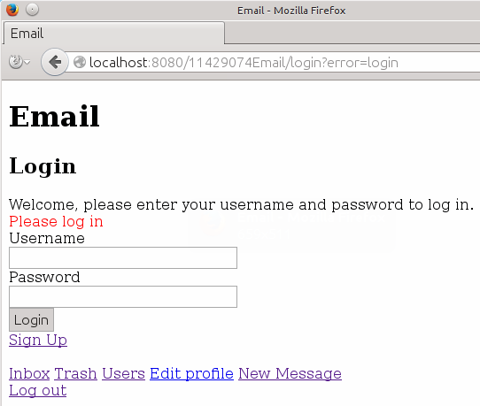
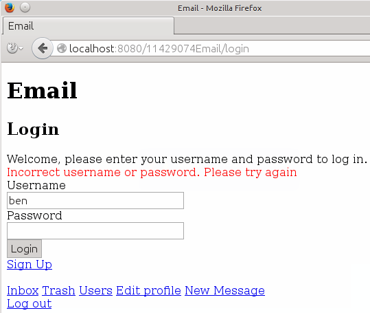
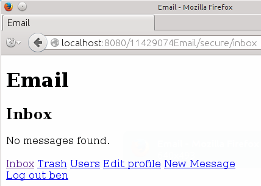
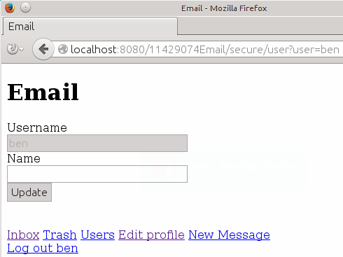
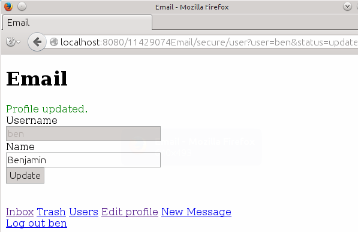
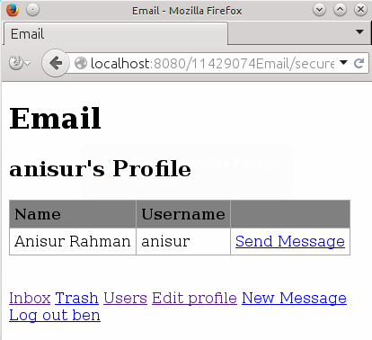
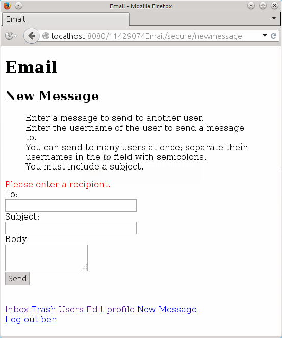
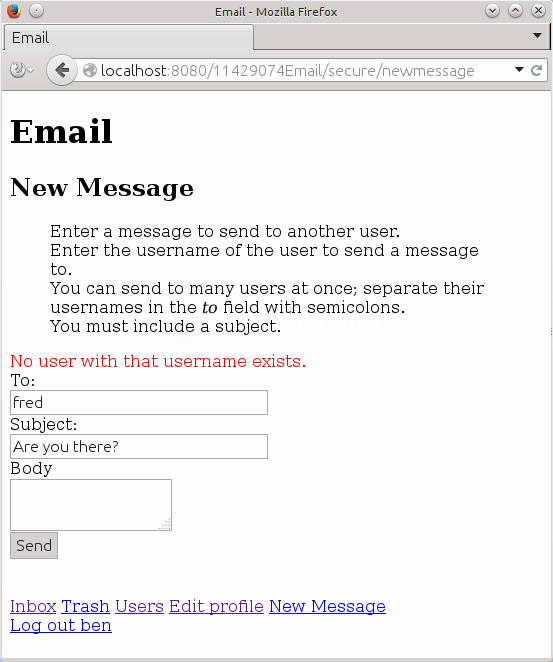
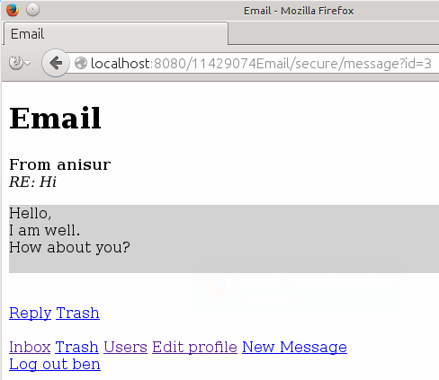
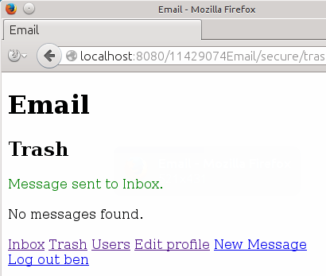

This is a simple web-based email system, using JavaServer Pages and Java Servlets and backed by a MySQL database.
It follows a Model-View-Controller pattern. Browser actions GET and POST are handled by controller Servlets, which pass data to JSP views, which handle how the page is displayed in the browser. Database actions are handled by Data Access Objects (DAO), which generally translate database data into instances of the model classes.
Users have a unique username, which is also the primary key of the users table. Hashed and salted passwords are stored with their salt.
Messages have an automatically incremented id and use the text data type for the body of the message. As messages can be sent to muliple recipients, the recipients are stored in another table.
The recipients table has a row for each recipient of each message. It includes a boolean value trash which indicates if it should be displayed in the Inbox or Trash.
I tested using Tomcat 7 and MySQL 14.14 on Ubuntu:
$ /usr/share/tomcat7/bin/version.sh
Using CATALINA_BASE: /usr/share/tomcat7
Using CATALINA_HOME: /usr/share/tomcat7
Using CATALINA_TMPDIR: /usr/share/tomcat7/temp
Using JRE_HOME: /usr
Using CLASSPATH: /usr/share/tomcat7/bin/bootstrap.jar:/usr/share/tomcat7/bin/tomcat-juli.jar
Server version: Apache Tomcat/7.0.52 (Ubuntu)
Server built: Jul 24 2014 08:38:51
Server number: 7.0.52.0
OS Name: Linux
OS Version: 3.13.0-34-generic
Architecture: amd64
JVM Version: 1.7.0_65-b32
JVM Vendor: Oracle Corporation$ mysql -V
mysql Ver 14.14 Distrib 5.5.38, for debian-linux-gnu (x86_64) using readline 6.3The following libraries should be in the directory WebContent/WEB-INF/lib
catalina-ant.jar
jstl-1.2.jar
mysql.jar
tomcat-coyote.jar
tomcat-juli.jar
tomcat-util.jarThe application uses MySQL as its database. To create the database and tables, run this command:
mysql -u root -p < database.sqlAfter the database is created, load the demo data with:
mysql -u root -p ST11429074email < demo.sqlThis includes the users and data as seen in the screenshots below. All users have their username as their password.
The application uses a properties file WebContent/WEB-INF/db.properties. Edit this file to select a database server. The user will need read and write access to the database. The default values are:
user=root
password=abc123
server=localhost
port=3306
database=ST11429074emailI built and deployed using ant and Tomcat Manager:
ant deployYou could also build hotel.war and deploy to Tomcat via the admin gui.
Create the war file with ant war, then deploy using the Tomcat Manager page.
Browse to the context path http://localhost:8080/11429074Email/:
When signing up, the chosen username is checked against existing usernames to warn against duplicates.

After successfully signing up, the user is redirected to the login page and invited to log in.
Passwords are hashed using password-based encryption. A PBEKeySpec is created with the chosen password and a salt which is generated using SecureRandom. The hash is generated using SecretKey with the PBKDF2WithHmacSHA1 algorithm. The hashed password and salt are stored with the username in the database.

Pages that require a login to view are under the path secure. The filter SessionFilter is applied to that path to check if a user is logged in. When you attempt to browse to such a page without being logged in, you will be directed to the login page.

When the login button is clicked, the application checks that a username and password have been entered.

When a username and password is entered, the application checks the combination against the database.

Logging in takes the user to their Inbox. There is a row of links at the bottom of every page for accessing all the functions of the application.

Clicking Edit Profile takes the user to their profile page, which includes a form for updating their details.

The user can enter their name and click Update.

Clicking the Users link takes the user to a list of all registered users. From here they can view another user's profile or send a message.

If the user clicks the username of another user, they can view that user's profile.

Clicking the Send Message link on the Profile or the User List directs the user to the New Message page with the To field pre-filled.

When attempting to send a message, the application checks that a recipient and a subject have been entered.


The application will also warn the user if the recipient doesn't exist.

After a message is sent, the user is redirected to the Inbox.


The User List is updated to show that a message has been sent to that user.

Messages can be sent to mulitple recipients by specified many usernames separated with semicolons.


Received messages appear in the Inbox.

The user can click the subject to view the message.

The user can click Reply to reply to the message. The To and Subject fields are pre-filled.

The User List is updated to show that a message has been recived from that user.

From the Message or Inbox, the user can send messages to the Trash. This sets the trash column in the recipients table to true.

Messages in the Trash can be moved back to the Inbox.

Messages can be deleted from Trash. Deleting a message deletes the row for that message for the current user from the recipients table. If the are no recipients for a message, that message is deleted from the messages table.

Clicking Logout invalidates the user's session and redirects the user to the login page.